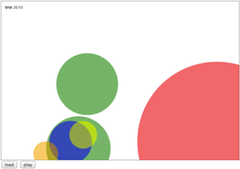
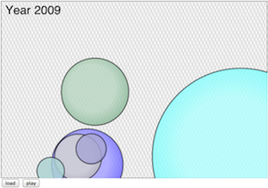

This is a simple chart with randomly
generated data. It will be different each time you reload the page. The play
button will flip through the frames, but the dots move to random places. view

Version 2
The chart now shows real data
loaded from a CSV file, and animates properly. The view is scaled to fit the data.view

Version 3
The final version of the chart
is improved styling. The background has a subtle pattern and the bubbles
have radial gradient overlay to create a subtle glow.view